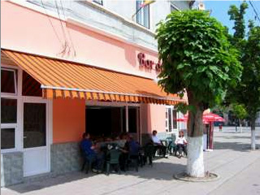
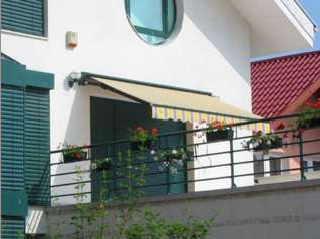
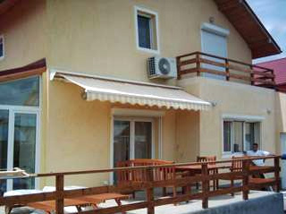
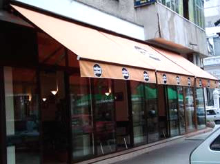

Copertine
 
 
Gama de parasolare plane Rollstar constituie un mod elegant si practic de protectie a casei impotriva bataii dogoritoare a soarelui.
Nimic nu va fi mai placut decat o dupa masa petrecuta pe terasa unei case, la umbra racoritoare a unui parasolar Rollstar.
Datorita materialului textil special impregnat folosit la fabricarea parasolarelor, s-a demonstrat reducerea caldurii interioare cu peste 50% atunci cand bate soarele. Potrivit studiilor, protectia solara, eficienta energetica si reducerea facturii de energie electrica pentru aerul conditionat sunt cele mai importante motive pentru cumpararea unui parasolar plan Rollstar.
Clientii nostri sunt incantati si de frumusetea si eleganta acestor parasolare, sustinand rolul estetic pe care il au in completarea aspectului unei case
Avantajele parasolarelor plane Rollstar:
- reduc caldura interioara cu peste 50%;
- genereaza reducerea consumului de curent electric;
- nu permit decolarea perdelelor, a covorului sau a mobilei;
- rol estetic-decorativ deosebit;
- nu necesita costuri de constructie - se monteaza usor.
Rollstar fabrica diverse dimensiuni pentru parasolarele plane, care sunt cuprinse intre urmatoarele limite:
- lungimi intre 2 si 20 m si deschideri intre 1,5 si 5m.
Parasolarele Rollstar pot atinge dimensiuni gigant de pana la 100mp acoperiti
Caracteristici material textil:
- material textil Sattler (Austria), special pentru parasolare;
- impregnat cu diverse substante pentru a nu permite decolorarea sau trecerea apei - Scotchguard
Caracteristici structura:
- piese fabricate din cel mai bun aluminiu
- tehnologie inovativa si fiabilitate
- culori:aluminiu natul, alb, maro, albastru etc
Actionarea parasolarelor:
- manuala pentru dimensiuni mici de terase;
- cu motor Somfy (lider mondial) la cerere; optional, pot fi livrate si alte accesorii: telecomenzi, senzori de vant/soare, etc.
Gama de culori a colectiei de parasolare plane a firmei Rollstar:
- 7 materiale "most wanted", permanent pe stoc;
- peste 100 de materiale disponibile in colectia acestui an.